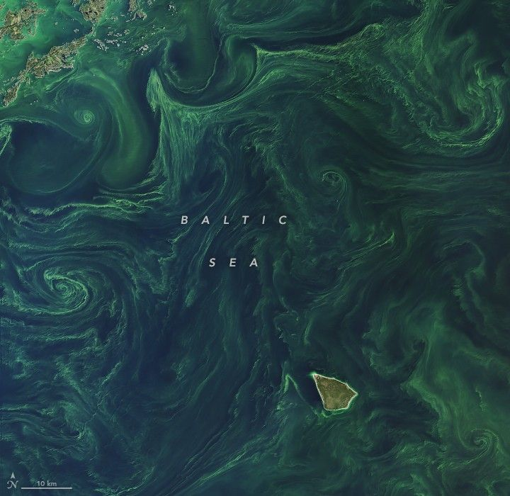

Brilliant Bloom in the Baltic Sea
Most summers, phytoplankton populations explode into a full-fledged “bloom” in the nutrient-rich waters of the Baltic Sea. Summer 2025 was no exception, as the tiny plant-like organisms amassed into bright green patches that swirled with winds and currents.
The OLI-2 (Operational Land Imager) on Landsat 9 captured these images of a bloom on July 20, 2025. They show parts of the sea south of the Swedish island of Gotland (above) and southeast of Stockholm (below). The dark, relatively straight lines crossing the detailed image are wakes of boats cutting through the bloom-filled waters.
The scene shows the open sea filled with filaments of bright yellow and green. A detailed view of a central part of the sea highlights the same filaments. A tiny white fleck on the right side is a boat, with a thin black line trailing behind it.
Identification of the specific type of phytoplankton cannot be determined from these satellite images alone. However, experts from the Swedish Meteorological and Hydrological Institute (SMHI) reported that surface waters that day contained cyanobacteria—an ancient type of marine bacteria that captures and stores solar energy through photosynthesis. Suspended sediment and pollen may also contribute to the yellow-green color in parts of the sea, but SMHI maps of cyanobacteria match the locations shown in the images.
Researchers have shown that cyanobacteria, previously known as blue-green “algae,” typically appear in this part of the Baltic Sea between late June and mid-July. They grow rapidly when nutrients like phosphorus are abundant in warm, stratified waters, and can utilize dissolved nitrogen. Cyanobacteria influence everything from nitrogen cycling and the marine food web to bottom-layer oxygen deficiencies when the phytoplankton are broken down by bacteria.